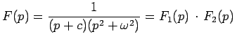
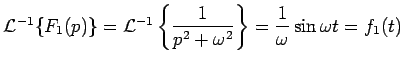

Inhalt Index DeskTop Bronstein

 Integraltransformationen Laplace-Transformation Rücktransformation in den Originalbereich
Integraltransformationen Laplace-Transformation Rücktransformation in den Originalbereich


Die Benutzung der Tafeln wird hier an einem Beispiel aus der Tabelle LAPLACE-Transformationen demonstriert. Weitere ausführliche Tafeln sind in Lit. 12.3 enthalten.
| Beispiel |
|
, , |